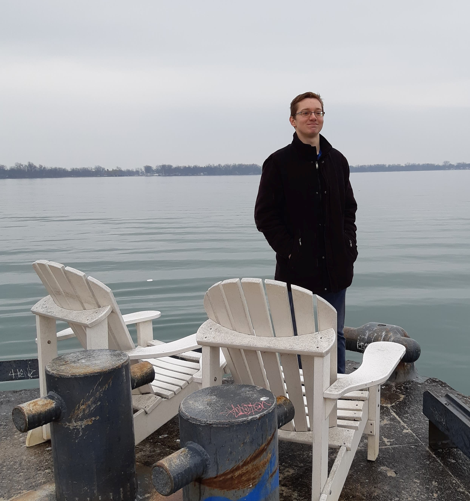

Hello there! I'm a recent mechanical engineering graduate from the University of Waterloo who loves exploring ideas and learning how the world works. I have internship experience spanning a variety of fields from aerospace, to construction, to software development. Through it all I've discovered that I love working on difficult yet meaningful problems. You can find some of my personal projects below. Stay tuned for more to come!
I believe that the best way to learn anything is to ask hard questions and reason out the answers for yourself. These questions can often prove more elusive than the answers themselves though. This is why I enjoy embarking on challenging projects which force me to explore the unkown and figure things out for myself.
I've always found fluid dynamics really interesting and recently decided to take my learning beyond the classroom by simulating their behaviour in C++. One method relied on representing the fluid as a velocity field that interacted with itself over time to create the familiar swirls we see when mixing two fluids together. The other method used a technique called Smooth Particle Hydrodynamics where thousands of particles were finely tuned to interact with each other in such a way that their collective behaviour would adequately emulate the motion of an everyday fluid.
This was a fun little project that I put together with an arduino, battery, two brushed DC motors and some scrap material I had lying around the house. The overall concept is quite simple. If the robot begins to lean forward, spin the wheels even more forward, so it starts leaning the other way and vice versa. This was implemented using a PID controller that read input from an MEMS gyroscope.
This project took an awfully long time to solder, but was well worth the effort once it could finally make 3D animations. It consisted of a 5x5x5 matrix of red LEDs. the 25 vertical columns were hooked up to 25 independent arduino mega outputs, and each layer was connected to ground via 5 independently controlled transistors. This setup allowed for each 5x5 layer to be lit in a unique configuration one at a time. A viewer's persistence of vision would then automatically blend these alternating layers together into a 3D animation.
Still a work in progress, but I figured I should include a video of it taking off. The crash is mostly attributed to my poor piloting skills, but the controls and center of mass do still require a fair amount of tuning. The controller is an Arduino Uno recieving input from a radio and gyroscope. The Arduino processes this data to update the speed of the propellors at 250 Hz.
Curious about anything on my page?
Just send me a message at rjtunney@edu.uwaterloo.ca
Cheers,
Ronan